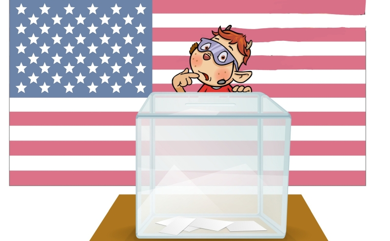

Alle vier Jahre wird in Amerika ein neuer Präsident oder eine neue Präsidentin gewählt. Am 3. November 2020 war es wieder so weit, und nach vier Tagen stand fest: Joe Biden wird der neue Präsident der USA. Doch warum hat es so lange gedauert, bis das Ergebnis bekannt wurde? Wie funktioniert diese Wahl eigentlich? Das erklären wir dir nun.
Die Parteien
In den USA gibt es nicht so viele verschiedene Parteien wie bei uns, sondern zwei große Parteien:
- Die Republikaner sind eine konservative Partei, ähnlich wie bei uns die CDU.
- Die Demokraten sind eine sozialdemokratische Partei, ähnlich wie bei uns die SPD.
In diesem Jahr standen Donald Trump für die Republikaner und Joe Biden für die Demokraten zur Wahl. Trump war seit 2017 Präsident, Biden wird ihn nun ablösen. So sieht Joe Biden aus:
Das Wahlsystem
Auch die Wahl läuft ganz anders ab als bei uns in Deutschland. In Amerika gibt es verschiedene Bundesstaaten, ähnlich wie bei uns die Bundesländer, nur viel größer. Bei uns gibt es z.B. Bayern und Niedersachsen, in den USA gibt es Florida, Kalifornien und andere Staaten.
Die Bürger eines Bundesstaates wählen unabhängig von den anderen Staaten. In jedem Staat werden ein paar Menschen ausgewählt, die dann den Präsidenten wählen. Diese Menschen heißen „Wahlleute“. Die Wahlleute werden nach der Bevölkerung in einem Bundesstaat eingeteilt. Ein großer Bundesstaat hat deshalb mehr Wahlleute als ein kleiner Staat.
Die Wahlleute aus allen Staaten kommen im Dezember zusammen und wählen dann den Präsidenten. Eigentlich wurde aber schon am 3. November vom Volk entschieden, wer der Präsident wird.
Die Wahl 2020
Die Auszählung dauerte diesmal viel länger als bei den letzten Wahlen. Das liegt daran, dass die Ergebnisse in vielen Staaten so knapp sind und alle Stimmzettel genau geprüft und gezählt werden müssen. Insgesamt mussten fast 150 Millionen Stimmzettel ausgewertet werden. Hinzu kam, dass das Team von Donald Trump immer wieder behauptet, es gab Betrug bei der Auszählung. Trump hat außerdem schon angekündigt, dass er nicht einfach aufgeben wird, sondern dass viele Stimmzettel noch einmal gezählt werden.
Wahrscheinlich müssen in den nächsten Wochen noch Gerichte darüber entscheiden müssen, ob alles mit rechten Dingen zuging.
Am 20. Januar 2021 wird dann der Wahlgewinner zum Präsidenten gekürt. So, wie es derzeit aussieht, wird dann Joe Biden als neuer Präsident in das „Weiße Haus“ in Washington einziehen.
(Alle Fotos sind gemeinfrei, sie stammen von Pixabay und Wikimedia-Commons.)